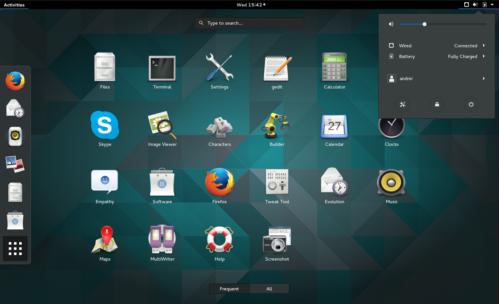
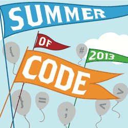
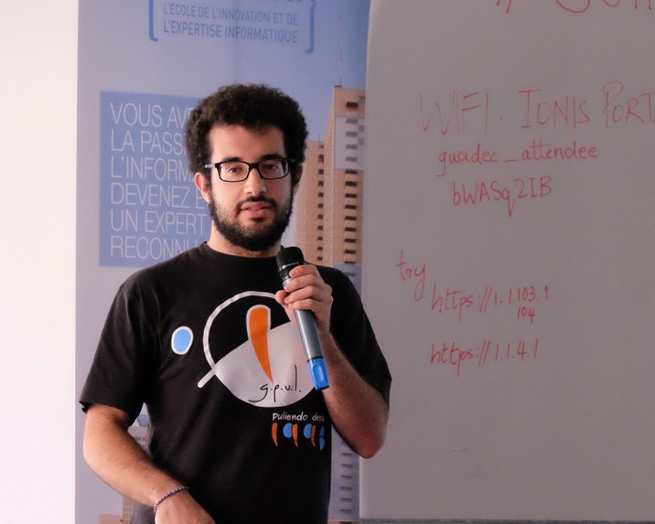

GNOMECAT,
un editor de ficheiros
GNU GetText
para o proxecto
Autor:
Director:
Índice
- 1. Introdución
- 2. Metodoloxía
- 3. Planificación
- 4. Desenvolvemento
- 5. Demo
- 6. Conclusións
- 7. Traballo Futuro
Introdución: GNU GetText
program.c[...]
printf (_("Hello World!"));
[...]
program.po[...]
#: helloworld.c:14
#, c-format
msgid "Hello World!"
msgstr ""
[...]
Característica de GetText
- Soporte avanzado de plurais
- Traducións difusas
- Comentarios
- [...]
Introdución: GNOME
Foto de Ana Rey (CC BY-SA)
GTranslator
- Aplicación CAT oficial de GNOME.
- Sen maintainer.
- Con moitos bugs.
- Escrita en C con GObject.

Metodoloxía
eXtreme Programming
Metodoloxía
- Código Aberto
- Deseño Simple
- Estandares de Programación
- Cliente no Sitio
- Bug Tracking
Planificación
GSoC 2013
6 Iteracións
325 horas
Curso 2013/2014
2 Iteracións
85 horas
GSoC 2014
5 Iteracións
325 horas
GUADEC 2013 en Brno (Rep. Checa)
X GUADEC Hispana en Madrid
GUADEC 2014 en Strasbourg (Francia)
Desenvolvemento
Análise
Listas de correos de equipos de traductores
Programas existentes
Módulo de Ficheiros
Centrado en GetText pero con un deseño estensible
Consellos
Pistas
Módulo de Linguaxes
Instancias das linguaxes con información adicional
Interface de Usuario
Varias versións
Seguimos as Guías de Interfaces Humanas De GNOME